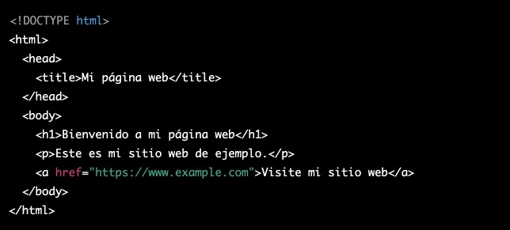

Lenguage de Programación HTML
HTML es un lenguaje de marcas utilizado para crear documentos estructurados en la World Wide Web. Es el estándar de facto para la creación de páginas web. HTML se utiliza para especificar la estructura y el contenido de un documento web, mientras que CSS se utiliza para especificar la presentación visual del mismo.
Para crear un documento HTML, debe crear un archivo de texto plano con la extensión .html o .htm y escribir el código HTML en él. El código HTML está compuesto por etiquetas, las cuales son instrucciones para el navegador sobre cómo debe mostrar el contenido.
Algunas etiquetas básicas de HTML incluyen:
<html>: Indica el comienzo y el final del documento HTML.<head>: Contiene información meta sobre el documento, como el título de la página que se muestra en la pestaña del navegador.<body>: Contiene el contenido visible de la página.<h1> a <h6>: Encabezados de nivel 1 a 6.<p>: Párrafo.<a>: Enlace.<img>: Imagen.<ul>: Lista no ordenada.<ol>: Lista ordenada.<li>: Elemento de lista.<div>: División utilizada para agrupar contenido en secciones.
Es importante recordar que las etiquetas de apertura y cierre deben anidarse correctamente y cerrarse en orden inverso al que se abrieron.
Ejemplo básico de un documento HTML:

Recomiendo buscar tutoriales y recursos en línea para aprender más sobre HTML y cómo crear páginas web. También puede utilizar herramientas de desarrollo web como Chrome DevTools para ver cómo se ve y funciona su código HTML en tiempo real.